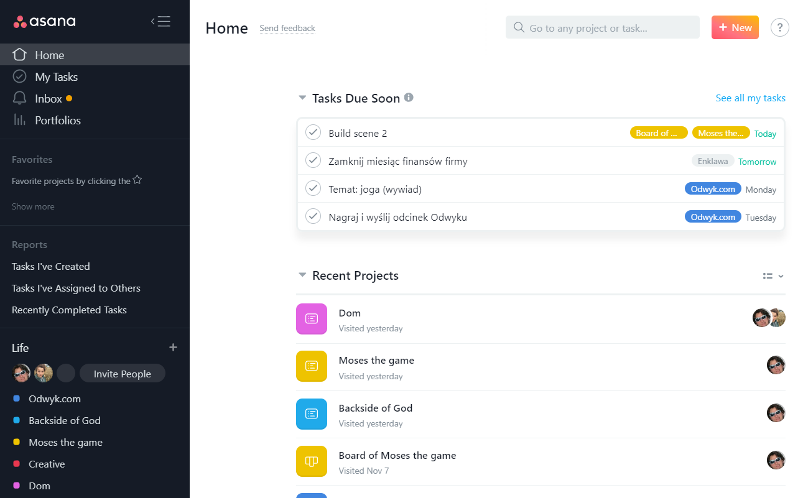

中国创作者视角 • 全球AI前沿 • 每日晨报
Janet's Express Box
2026-06-05 // VOL_248
2026-06-05 // VOL_248
Agent 进系统
企业 AI 正从演示台走进治理、数据、金融和创作流水线。
昨晚到今晨，AI 的关键词不是更会聊天，而是开始进系统、拿身份、背责任、吞预算。
📌 今日趋势：Agent开始进系统
今天共同主线很硬：Asana 把人和 agent 放进同一张工作计划，S&P Global 把 agentic workflow 塞进信贷 memo，Cognizant 和 ServiceNow 把 AI 治理做成控制塔，Alibaba Cloud 则把 Qwen、agent 工具和安全中心打包给海外客户。AI 不再只是在聊天框里装聪明，它开始碰 CRM、ERP、信贷、HR、移动应用和企业数据。
这对中国创作者和企业的含义很直接：下一波机会不是再套一个问答壳，而是把 agent 接进具体岗位，并且能解释、能追责、能停机。谁能把角色、数据、动作、审批、日志和成本放进同一套工作流，谁才有资格收企业钱；只会喊“全自动”的团队，迟早被客户的内控表打回原形。
接下来 2-4 周盯三件事：一是 agent 身份和审计会不会变成企业采购硬门槛，二是本地开源模型能不能真正压低多模态工作流成本，三是创作者工具会不会从生成单张素材，升级成能连续交付 app、3D、视频和运营动作的流水线。
01 / KEY INTELLIGENCE (全球要闻)

Asana Investor Relations
Asana 想把人和 Agent 塞进同一张表
来源: Asana Investor Relations · 2026-06-05 · 原文链接
Asana 在伦敦 Work Innovation Summit 发布面向 human-agent teams 的操作系统，核心是让人类和 AI agents 在同一计划、同一上下文和同一治理框架下协作。新套件包含行业化 AI Teammates、个人 AI Chief of Staff Asana Dash，以及面向 IT、开发者和专业服务团队的新应用。
Janet 锐评：
这条新闻撕开的是企业协作软件的老伤口：任务管理不能只管人，马上还要管 agent。门槛不在生成几条待办，而在企业数据、角色边界、跨系统动作和责任链能不能一起跑。国内做项目管理、OA、CRM 的团队应该立刻补 agent 身份、审批和审计日志，否则你的软件会被真正能调度人机工作的系统挤成备忘录。
SP Global / PRNewswire
S&P Global 让 Agent 写信贷报告
来源: SP Global / PRNewswire · 2026-06-05 · 原文链接
S&P Global 发布 Credit Memo Builder，用 agentic workflow 聚合 RatingsDirect、RiskGauge、Capital IQ Pro 以及 Kensho 的数据检索能力，帮助贷款委员会、承销和信贷分析师更快生成信用决策报告。官方称重点是减少资料收集和综合时间，让分析师把精力放回风险判断。
Janet 锐评：
金融场景最现实，因为它不缺数据，缺的是把碎片数据变成可审的决策材料。难点不是 AI 会不会写 memo，而是数据来源、引用、版本、责任人和风险假设能不能被复盘。国内券商、银行和投研团队别先做花哨助手，先把信贷、尽调、授信复核这类高频文档做成可追溯流水线，省下来的才是真人小时。
Thailand4 / Alibaba Cloud
阿里云把 Agent 套餐卖到亚洲企业
来源: Thailand4 / Alibaba Cloud · 2026-06-05 · 原文链接
Alibaba Cloud 在首个国际 Qwen Conference 后对外发布一组 agentic AI 更新，覆盖 Qwen Cloud、JVS Agent Suite、JVS Claw Teams、JVS Mobile、Agent Security Center，并宣布加入 PyTorch Foundation 成为 Platinum member。它还在新加坡推出面向 SMEs 和学生的生成式 AI 与 agentic AI 培训计划。
Janet 锐评：
阿里云这次真正想卖的不是单个模型，而是一整套海外企业 agent 基建。机会在东南亚，因为当地企业既想用中文大模型生态，又怕系统接入和安全能力跟不上。国内出海团队可以借这个栈做金融、客服、跨境电商和办公自动化方案，但别只会调 Qwen，客户最后买的是部署、运维和安全闭环。
IBM / Google Cloud / PRNewswire
IBM 和 Google 把 AI 治理打包卖
来源: IBM / Google Cloud / PRNewswire · 2026-06-05 · 原文链接
IBM 与 Google Cloud 宣布新的战略合作，成立 Google Cloud Practice，把 IBM Consulting Advantage 的行业 agents 与 Google Cloud 的 Gemini Enterprise Agent Platform、网络安全和数据能力结合，用于帮助企业把 AI 推进生产环境和核心系统现代化。
Janet 锐评：
咨询公司开始把 agent 写进交付方法论，说明企业 AI 已经从买工具变成买落地队伍。真正贵的是行业知识、旧系统迁移、数据治理和上线后的责任划分，不是模型调用本身。国内 SI 和咨询团队要学的是把 agent 做成可交付包，带行业模板、验收指标和失败回滚，而不是拿一页 PPT 转卖 API。
TechCrunch
Meta 想让 WhatsApp 变成商家代理入口
来源: TechCrunch · 2026-06-05 · 原文链接
TechCrunch 最新归档显示，Meta 的 WhatsApp Business AI agent 已在全球开放，面向商家提供对话、销售和客户支持能力。这个动作把 Meta AI 从消费端聊天继续推进到商家经营入口，目标是让小商家在 WhatsApp 里直接处理客户需求。
Janet 锐评：
这是平台型 AI 最该让创作者紧张的地方：入口一旦被消息应用拿走，独立工具就很难再抢回客户关系。门槛在本地语言、商品信息、支付流程和人工接管，Meta 有流量但不一定懂每个行业的脏活。国内做私域、跨境电商和客服外包的团队要赶快把 WhatsApp、Instagram、Messenger 的 AI 接待流程标准化，不然客户会被平台原生 agent 直接截走。
02 / MODEL UPDATES (模型动态)
Google Blog
Gemma 4 12B 能塞进 16GB 笔电
来源: Google Blog · 2026-06-05 · 原文链接
Google 发布 Gemma 4 12B，这是一个 12B 级开放权重多模态模型，强调 encoder-free 架构，可直接处理文本、图像、视频和原生音频，并面向 16GB VRAM 或统一内存的笔电本地运行。模型以 Apache 2.0 发布，支持 Hugging Face、Kaggle、LM Studio、Ollama、llama.cpp、MLX、vLLM 等生态。
Janet 锐评：
Gemma 4 12B 的杀伤点不在参数吓人，而在把多模态能力压到普通开发机上。成本门槛会从云端 token 费转到本地显存、量化质量和工程适配，省钱不是自动发生的。做私有知识库、语音整理、视频粗筛和本地 coding agent 的团队可以先拿它跑隐私数据场景，能离线跑稳，比追最大模型更有商业价值。
Qwen Cloud / Alibaba Cloud
Qwen 出海不卖模型，卖整套服务
来源: Qwen Cloud / Alibaba Cloud · 2026-06-05 · 原文链接
Qwen Conference 信息页和 Alibaba Cloud 对外稿显示，Qwen3.7-Max、Qwen Cloud、Model Studio、Agent Security Center、QoderWork、MuleRun、JVS Claw 等被一起推向国际客户。会议主线从 foundation models 转向 agent era，强调模型服务、agent-native cloud 和安全治理组合。
Janet 锐评：
Qwen 这步不是单纯发模型，而是把模型、工具、云资源和安全中心捆成海外企业可买的包。门槛在多地区部署、合规、数据边界和生态信任，中文模型能力再强，也要过客户安全团队这一关。中国 SaaS 出海团队可以借 Qwen 做低成本 agent 底座，但必须自己补行业数据和交付能力，别幻想云厂商替你卖方案。
Newswire / Aible
Nemotron Ultra 盯上长任务 Agent
来源: Newswire / Aible · 2026-06-05 · 原文链接
Aible 宣布 AibleClaw 支持 NVIDIA Nemotron 3 Ultra，用于 governed long-running AI agents，并可用其输出对更小的 Nemotron 3 Super 和 Nano 做企业场景后训练。公司称 Nemotron 3 Ultra 面向 coding、deep research 和 enterprise automation，可带来更快推理和更低 agentic task 成本。
Janet 锐评：
长任务 agent 的真实问题不是一次回答多聪明，而是几十步之后还不跑偏。Nemotron 这类开放模型被企业 agent 平台接入，说明市场开始追求可控、可后训练、可降级的模型链。国内做企业自动化的团队要学会大模型做规划、小模型做执行，把成本和失败范围压住，否则 agent 跑一天就能烧掉一个月预算。
OpenAI
ChatGPT 记忆开始在后台自己整理
来源: OpenAI · 2026-06-05 · 原文链接
OpenAI 介绍 ChatGPT memory 的 dreaming 方法，说明 ChatGPT 会在后台自动整理和更新记忆，让用户在新对话里不用反复介绍自己。官方称 dreaming 会参考聊天历史，对记忆做自动管理，并继续围绕用户控制和隐私改进体验。
Janet 锐评：
这不是普通记忆功能更新，而是 AI 产品开始把长期用户画像当核心资产经营。门槛在隐私、纠错和用户控制，记错一次偏好还好，记错身份、关系和业务背景就会很麻烦。内容创作者和个人品牌团队可以利用长期记忆减少重复设定，但企业知识场景一定要把哪些能记、多久清理、谁能查看写清楚。
03 / TECH INSIGHTS (技术深度)
Cognizant / ServiceNow / PRNewswire
ServiceNow 和 Cognizant 把治理做成控制塔
来源: Cognizant / ServiceNow / PRNewswire · 2026-06-05 · 原文链接
Cognizant 宣布将 Neuro AI Trust 与 ServiceNow 集成，为企业 AI 提供持续 assurance infrastructure。新方案把 ServiceNow AI Control Tower 的可视化和治理，与 Cognizant 的 responsible AI agents、标准库和 guardrails 结合，覆盖模型、agent、AI asset 以及关联身份和许可。
Janet 锐评：
企业 AI 最大的缺口已经不是能不能上线，而是上线后谁负责。治理从静态制度变成持续监控，说明 agent 开始像员工和系统账号一样需要被盘点、打分和停用。国内做大企业 AI 的团队别把合规当交付后的文档附件，要把发现、监控、审批、告警和回滚做进产品，不然客户风控部门会直接按暂停键。
Business Wire / Radiant Logic
Radiant Logic 开始给 Agent 算身份风险
来源: Business Wire / Radiant Logic · 2026-06-05 · 原文链接
Radiant Logic 发布面向 agentic enterprise 的身份可见性和智能能力，强调跨平台 agent inventory、连续风险评分和控制。它把 agent 当成新的身份对象处理，目标是在不同 agent 平台和治理系统之间提供统一视图。
Janet 锐评：
agent 安全的下一步不是多写几条提示词，而是把 agent 当成会行动的身份。风险来自它能访问什么、代表谁行动、有没有被过度授权，以及异常行为能不能及时发现。做企业安全和 IAM 的团队要赶快补 agent inventory 和风险评分，因为未来泄漏不一定来自人类账号，也可能来自一个被放养的自动化代理。
EINPresswire / Octon
机器人治理平台来了，实体 Agent 也得上规矩
来源: EINPresswire / Octon · 2026-06-05 · 原文链接
Octon International 在台北宣布 Orion Fabric，这是一个面向企业软件和 physical AI 的 agentic AI governance platform。它通过 Orchestrator、Core、Ingress/Egress Governance、Skill and Endpoint Gateway 等组件，为企业 agent 和 ROS 2、NVIDIA Omniverse / Isaac Sim 相关机器人场景提供安全、审计和 human-in-the-loop 控制。
Janet 锐评：
physical AI 一旦接进真实设备，错误就不只是写错文档，而是可能动到机器和现场流程。门槛会从模型能力转向工具调用边界、人工确认、仿真回放和事故审计，越靠近物理世界越不能裸跑。机器人和工业 AI 团队现在就该把安全层独立出来，先管动作，再谈智能。
TechCrunch
Uber 的 AI 账单被按下刹车
来源: TechCrunch · 2026-06-05 · 原文链接
TechCrunch 归档继续显示，Uber 在员工 AI 工具支出超出预算后设置使用上限。相关报道提到，企业一边鼓励工程师使用 coding agents，一边开始追问 AI 使用量和真实产品产出之间的关系。
Janet 锐评：
这条线最扎心：agent 工具不是免费生产力，它会把预算烧成可见账单。门槛在任务级成本核算、模型路由、缓存、验收和工程产出归因，而不是给每个员工开最高档订阅。国内老板要马上给 AI coding 做 FinOps，把每个 repo、每类任务、每次自动修复的花费算清，不然所谓提效会先把财务打醒。
04 / INVESTMENT & PREDICTION (投资视角/大胆预测)
今日核心预测
Supabase / PRNewswire
Supabase 估值冲到 105 亿美元
来源: Supabase / PRNewswire · 2026-06-05 · 原文链接
Supabase 宣布完成 5 亿美元 Series F，投后估值 105 亿美元，资金将用于扩大 agentic infrastructure 领先优势。公司把自己定位为开源 Postgres 开发平台，并继续受益于 AI coding 和应用生成浪潮。
Janet 锐评：
Supabase 的融资说明，AI 应用爆发后最肥的不一定是应用本身，而是开发者离不开的数据库和后端底座。门槛在稳定性、迁移成本、开源信任和企业级托管，估值涨得快也意味着增长压力会更凶。国内开发者工具创业者要看懂这条：别只做一个 vibe coding 前端壳，围绕数据、鉴权、部署和可观测性收费，钱更稳。
Business Standard
TrueFan 开始把 AI 视频卖给企业
来源: Business Standard · 2026-06-05 · 原文链接
Business Standard 报道，企业 AI 视频平台 TrueFan AI 完成 1000 万美元 Series A，由 Baring Private Equity Partners India 和 Z3Partners 领投。公司称平台一年内从 500 万条视频扩展到 2000 万条以上，并计划继续做全球扩张和企业部署。
Janet 锐评：
AI 视频终于从炫技 demo 走到企业批量生产，投资人看的不是单条视频多惊艳，而是能不能规模化卖给销售、客服、培训和营销部门。门槛在肖像授权、品牌安全、多语言交付和转化数据，生成能力只是入场券。国内视频工具团队要把个性化视频做成 CRM 和电商运营的一部分，用结果收费，而不是靠模板会员硬撑。
Coralogix
Coralogix 继续把观测层做肥
来源: Coralogix · 2026-06-05 · 原文链接
Coralogix 官方宣布完成 2 亿美元融资，用于扩展 AI 时代的 observability backbone。公司把增长逻辑押在 AI workloads 和 AI agents 进入生产后，企业需要更强日志、指标、链路、安全和问题排查能力。
Janet 锐评：
投资上最朴素的逻辑是：agent 越多，监控越值钱。应用层会卷死，但谁能告诉企业 agent 做了什么、哪里失败、花了多少钱，谁就站在预算入口。国内可观测性和安全厂商别只盯传统 APM，要把 token 成本、工具调用、agent 行为回放和异常检测做成新账本。
05 / CREATOR TOOLBOX (创作者工具箱)
Janet的快车箱 · AI科技晨报 · 2026-06-05 版